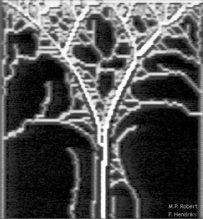
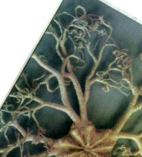
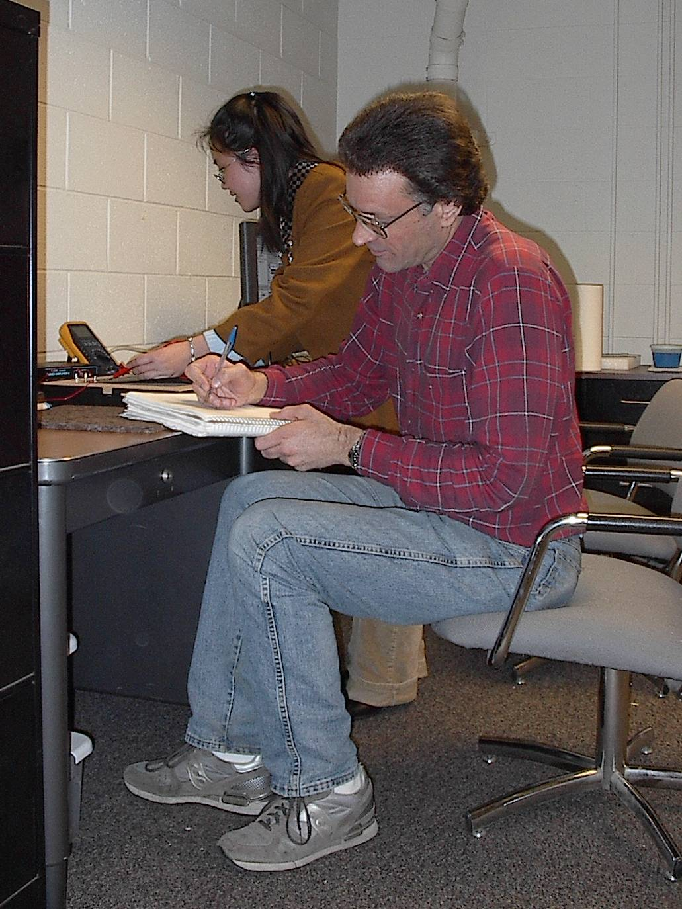

|
Math 512Contemporary Applications of Mathematics |
 |
| |
Math 512Contemporary Applications of Mathematics |
|
Instructor:
Prof. J. A. Pelesko
Prof. L. F. Rossi
Email:
pelesko@math.udel.edu
rossi@math.udel.edu
Phone:
(302) 831-1467
(UDel x1467)
(302) 831-1880
(UDel x1880)
Meetings: MWF 2:30-3:20
Department of Mathematical Sciences
University of Delaware
Newark, DE 19711
USA
This course focuses on modeling and the application of
mathematical methods to open problems. The course will be
problem- and data-driven, and students will be expected to attack open
problems from a variety of areas including engineering, physics, biology
and economics.
 It will also focus on critical analysis of the
quality of a model, and effective verbal and written
exposition of solutions. Most of the course content will be a
single project that you will explore with two or three of your fellow
classmates.
It will also focus on critical analysis of the
quality of a model, and effective verbal and written
exposition of solutions. Most of the course content will be a
single project that you will explore with two or three of your fellow
classmates.
Students will have a variety of resources available to them. Essentially, you can use anything you need to get the job done. One unique aspect of this course is the MEC lab, a laboratory for doing small, careful mathematical experiments. Thus, mathematical analysis, computations and experimentation are all in play with this course.
Successful students in Math512 will build connections between
problems, mathematics, computations and experiments. For instance,
consider these two images.



Your project may be one of the following:Prerequisite: A 300 level course in differential equations.
Extras: Though this course only has one prerequisite, we will draw on material from many diverse areas. If you have had a course on linear algebra or finite math, you may enjoy the class all the more. If you know a programming language, even Matlab, you may find it useful for solving certain problems. Like many things in life, you bring to bear whatever you have to make the most of a given situation
If you are interested in solving open problems that are accessible
to undergraduates, take a peek
at last year's Mathematical Contest in Modeling problems.
You can download a course syllabus in PDF
(requires a free reader from Adobe) or HTML.
 Last modified: 7
Dec 2003.
Last modified: 7
Dec 2003.